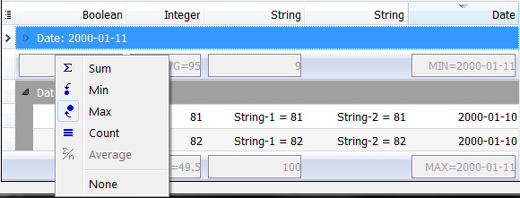

Summary - usage and customization
Summary Overview
The QtitanDataGrid is capable of showing column summaries. This mechanism allows you to automatically calculate column summaries for a group of rows or all rows at once. The summary calculation result for a group of rows is displayed on a special summary panel located under the group or on a footer panel for results calculated for all grid rows. Five summary calculation scenarios are available:
- Summary Min Finds the minimal value. Cannot be applied to grid columns containing values of the following types: QVariant::String, QVariant::List, QVariant::Map, QVariant::StringList, QVariant::Icon, QVariant::Image, QVariant::Pixmap, QVariant::Bitmap.
- Summary Max Finds the maximum value. Cannot be applied to grid columns containing values of the following types: QVariant::String, QVariant::List, QVariant::Map, QVariant::StringList, QVariant::Icon, QVariant::Image, QVariant::Pixmap, QVariant::Bitmap.
- Summary Count Finds the total number of items. Can be applied to columns with all kinds of values.
- Summary Avg Finds the average value. Cannot be applied to grid columns containing values of the following types: QVariant::DateTime, QVariant::Date, QVariant::Char, QVariant::String, QVariant::List, QVariant::Map, QVariant::StringList, QVariant::Icon, QVariant::Image, QVariant::Pixmap, QVariant::Bitmap.
- Summary Sum Finds the sum of all values. Cannot be applied to grid columns containing values of the following types: QVariant::DateTime, QVariant::Date, QVariant::Char, QVariant::String, QVariant::List, QVariant::Map, QVariant::StringList, QVariant::Icon, QVariant::Image, QVariant::Pixmap, QVariant::Bitmap.

You can determine what summary types a specific column supports using the GridModelDataBinding::supportedSummaryTypes() property.
Qtitan::GridTableColumn* column = (Qtitan::GridTableColumn *)view->getColumn("col"); SummaryTypes types = column->dataBinding()->supportedSummaryTypes();
Configuring a summary for all grid rows
Summaries for all grid rows are called footer summaries, as these summaries are located on the footer panel of the grid. They contain values calculated for all grid rows. Configuration of these summaries begins with making the footer panel visible. The panel visibility is controlled by the setFooterSummaryVisible() grid property.
view->options().setFooterSummaryVisible(true);
The summary type is set using the setFooterSummary() method of the grid column.
Qtitan::GridTableColumn* column = (Qtitan::GridTableColumn *)view->getColumn("col"); column->setFooterSummary(Qtitan::SummaryCount);
Configuring a summary for a group of rows
Summaries for a group of rows are called group summaries. They are shown on a special panel called Group Footer Panel. This panel can be found under the last row belonging to a group. The grid has a separate Group Footer Panel for each group of rows. The visibility of the footer panel is controlled by the setGroupSummaryVisible() grid property.
view->options().setGroupSummaryVisible(true);
The summary type is set using the setGroupSummary() method of the grid column object. The first parameter should be the name of the grid column that will take part in grouping. Example:
Qtitan::GridTableColumn* dateColumn = (Qtitan::GridTableColumn *)view->getColumn("date"); Qtitan::GridTableColumn* nameColumn = (Qtitan::GridTableColumn *)view->getColumn("name"); nameColumn->setGroupSummary(dateColumn, Qtitan::SummaryCount);
Once this function is called, the grid displays a summary for the nameColumn column when grouping by dateColumn is completed. If you use Q_NULL as the first argument of the setGroupSummary() function, the summary will be shown regardless of the column used for grouping. Please note that this line of code:
nameColumn->setGroupSummary(0, Qtitan::SummaryCount);
and this one:
nameColumn->setDefaultGroupSummary(Qtitan::SummaryCount);
are identical.
Disabling summaries
If you need to programmatically disable a column summary, you need to pass "SummaryNone" as the summary type value.
column->setDefaultGroupSummary(Qtitan::SummaryNone);
or
column->setFooterSummary(Qtitan::SummaryNone);
Managing summaries using an user interface
You can use a special interface to manage summaries. If you need to enable the footer menu, use the popup menu and specifically its Footer Panel section. To enable the group footer panel, use the same popup menu and its Group Footer Panel section. Right-clicking on the footer panel or group panel in the area intended for summary data will open an additional popup menu that will allow you to select the summary type. See the screenshot.
For more information abour summaries, use the summaries demo file supplied with QtitanDataGrid.